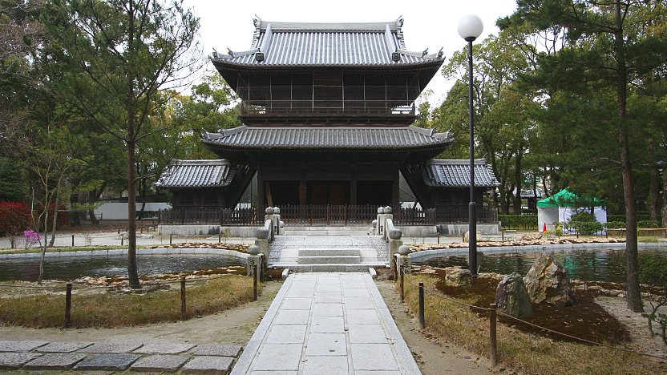

Shofukuji Temple
聖福寺
Shofukuji (聖福寺, Shōfukuji) has the distinction of being the first Zen temple constructed in Japan. It was founded in 1195 by the priest Eisai, who introduced the Rinzai sect of Zen Buddhism from China into Japan. Although the temple buildings cannot be entered, visitors can walk through Shofukuji's attractive temple grounds and observe the buildings from outside.
Before Zen's introduction to Japan, Buddhism has already had a long history in Japan dating back to the 500s. The new teachings of Zen, which Eisai amassed during his travels in China, promoted meditation and discipline as the means to enlightenment and became popular with the samurai class, which was exerting political power through the government in Kamakura.
The temple grounds of Shofukuji have many of the features of a typical Zen temple, and its wooden buildings have been destroyed and rebuilt many times throughout the centuries. There are a number of temple gates, the most prominent of which is the Sanmon Gate. The large gate stands in front of a small pond and bridge and was most recently rebuilt in 1911.
Behind the Sanmon Gate a tree lined path leads to the Butsuden Hall, which holds a small wooden statue of the historical Buddha flanked by giant golden statues of other Buddhas on either side. The building's ceiling is decorated by a painting of a cloud dragon. Shofukuji has a number of other interesting buildings, such as a belfry and a hall dedicated to Eisai. More Buddhist architecture can be seen at a few smaller temples in the surrounding neighborhood.